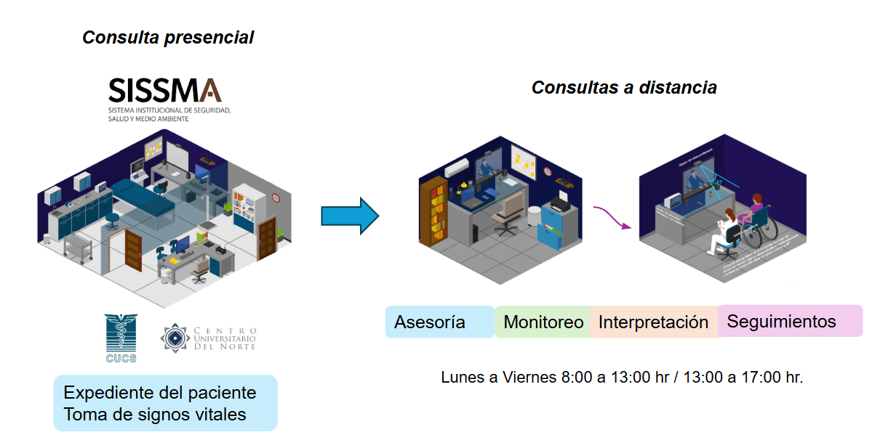

Los servicios bioinformáticos ofertados por la unidad de salud digital tienen el fin de apoyar y enriquecer los proyectos de investigación del Centros Universitarios de la Universidad de Guadalajara enfocados áreas como la genética, la biología molecular, la biotecnología y la medicina personalizada.
La telemedicina es el uso de tecnologías de la información y la comunicación para proporcionar atención médica a distancia, con la finalidad de que el paciente no debe de desplazarse.
El objetivo de la unidad de Salud Digital es promover e implementar estrategias para el cuidado de la salud, a través de Teleconsultas utilizando tecnologías computacionales y personal médico capacitado, para la prevención y atención médica oportuna de personas con dificultad a acceso médico a través de la red de centros universitarios de la Universidad de Guadalajara.
El estrés es una respuesta generalizada tras la exposición de actividades o situaciones ya sea de forma personal, social y ecológica que ponen en alerta al individuo a largo de la vida.
Todos los padecimientos deben de ser valorados en una consulta presencial en los consultorios de SISSMA de cada centro universitario.
ESPECIALIZADOS
El protocolo requiere una primera consulta presencial para la toma de signos vitales, posteriormente, se tomarian consultas a distancia.
